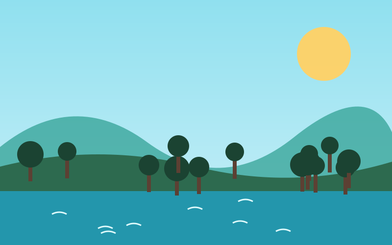
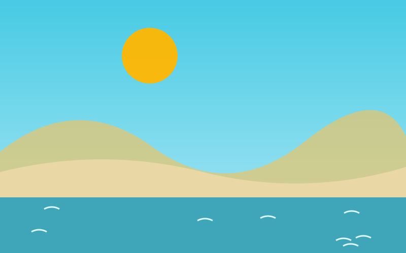
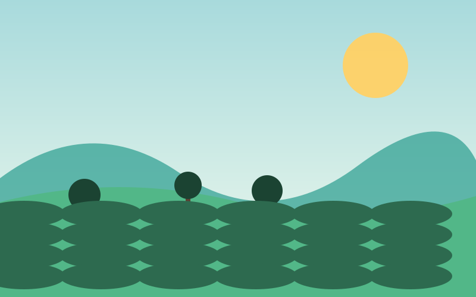
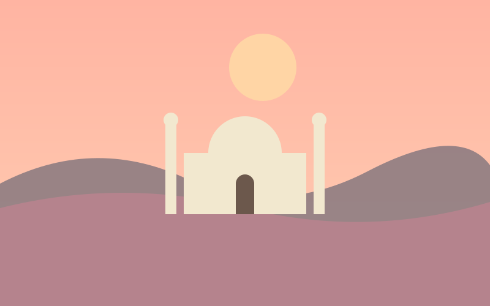

The Sundarbans
A UNESCO World Heritage Site and home of the Royal Bengal Tiger. Explore its rivers and creeks by boat. UNESCO page
Bangladesh may be a small country on the map, but it offers a surprising variety of landscapes. In a single trip you can sail through tiger country in the south-west, relax on a sandy beach in the south-east and walk through endless tea gardens in the north-east.
The cards below highlight four of the most popular places. Each one can be reached from Dhaka by bus, train, boat or a short domestic flight, which makes it easy to combine several of them into one journey.

A UNESCO World Heritage Site and home of the Royal Bengal Tiger. Explore its rivers and creeks by boat. UNESCO page

A sea beach of about 120 km of unbroken sand — perfect for sunsets, seafood and long walks.

The "tea capital" of Bangladesh, with rolling tea gardens, rainforest trails and the famous seven-layer tea.

Narrow lanes, rickshaws, the Star Mosque and Lalbagh Fort — the historic heart of the capital.